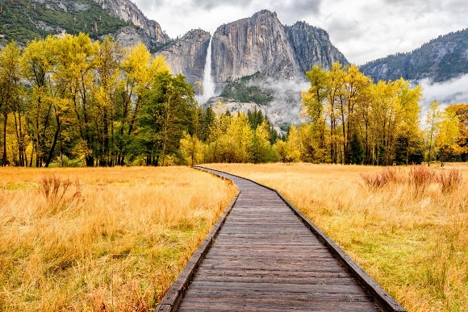

Newton's Cradle aptly demonstrates the principle of the conservation of momentum (mass times speed).
This principle states that when two objects collide, the total momentum of the objects before
the collision is equal to the total momentum of the objects after the collision.
This is also proof of Newton's law of the conservation of energy,
which states that energy can't be created or destroyed but that it can change forms.

The Active Trails program promoted healthy lifestyles while simultaneously protecting and enhancing these
precious land and water trail resources.
This multi-faceted program offers many ways in which volunteers, community groups, corporate partners,
students and educators can get involved with their national parks through hands on trail work, citizen science,
formal and informal learning activities, special events and community activities.